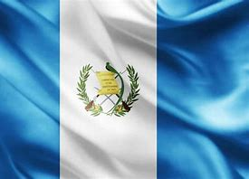

Bandera
La bandera de Guatemala tiene tres franjas verticales: azul, blanco y azul. El blanco representa la paz, mientras que el escudo en el centro simboliza la libertad.
La bandera de Guatemala tiene tres franjas verticales: azul, blanco y azul. El blanco representa la paz, mientras que el escudo en el centro simboliza la libertad.
El escudo de Guatemala incluye un Quetzal, que representa la libertad, junto a un pergamino con la fecha de independencia.
Guatemala se independizó de España en 1821. Su historia incluye una rica herencia maya, con sitios arqueológicos como Tikal.
Guatemala tiene una extensión territorial de aproximadamente 108,889 km².
Tikal es un sitio arqueológico maya rodeado de selva, conocido por sus templos y estructuras antiguas.
Antigua es una ciudad colonial con arquitectura histórica y calles empedradas, declarada Patrimonio de la Humanidad.
Rodeado de volcanes, el Lago de Atitlán es un destino popular para el turismo y la recreación.